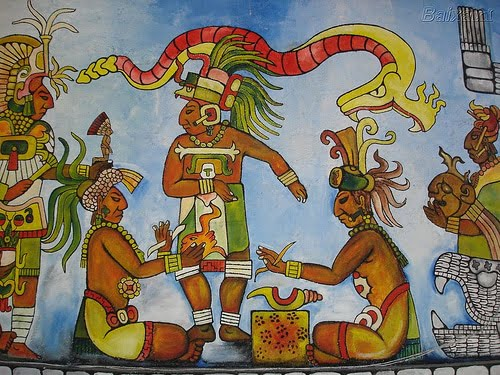
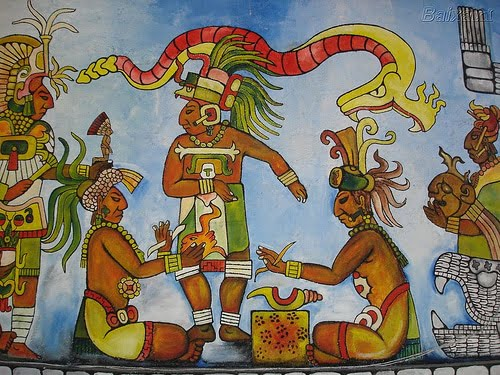

El Origen de la Humanidad según el Popol Vuh: En la Cultura Maya
El texto sagrado de los mayas quichés, está lleno de significados y simbolismos que reflejan la profunda cosmovisión y los valores esenciales de esta cultura mesoamericana.
¿Que trata?
La creación de la humanidad comenzó con los dioses Tepeu y Gucumatz, quienes, en un principio, solo tenían el cielo y el mar. Decidieron crear el mundo y lo hicieron con su palabra, formando la tierra, las montañas, los valles, los bosques y los animales. Intentaron primero crear humanos de barro, pero estos seres eran frágiles y se deshacían fácilmente. Luego, probaron con madera, pero aunque estos seres podían hablar, carecían de alma y entendimiento, y no adoraban a los dioses, por lo que fueron destruidos por un diluvio y atacados por sus propios utensilios y animales.
Finalmente, los dioses utilizaron maíz, un elemento sagrado, para crear a los primeros verdaderos humanos: Balam-Quitzé, Balam-Acab, Mahucutah e Iqui-Balam. Estos seres eran perfectos y sabios, con una visión tan aguda que los dioses decidieron limitar para que solo pudieran ver lo que estaba cerca. Luego, los dioses crearon mujeres para acompañar a estos hombres, y de estas uniones surgieron los antepasados de los pueblos mayas, consolidando así la creación de la humanidad.

Significado y Simbolismo
El texto sagrado de los mayas quichés, está lleno de significados y simbolismos que reflejan la profunda cosmovisión y los valores esenciales de esta cultura mesoamericana.
¿Que trata?
La creación de la humanidad comenzó con los dioses Tepeu y Gucumatz, quienes, en un principio, solo tenían el cielo y el mar. Decidieron crear el mundo y lo hicieron con su palabra, formando la tierra, las montañas, los valles, los bosques y los animales. Intentaron primero crear humanos de barro, pero estos seres eran frágiles y se deshacían fácilmente. Luego, probaron con madera, pero aunque estos seres podían hablar, carecían de alma y entendimiento, y no adoraban a los dioses, por lo que fueron destruidos por un diluvio y atacados por sus propios utensilios y animales.
Finalmente, los dioses utilizaron maíz, un elemento sagrado, para crear a los primeros verdaderos humanos: Balam-Quitzé, Balam-Acab, Mahucutah e Iqui-Balam. Estos seres eran perfectos y sabios, con una visión tan aguda que los dioses decidieron limitar para que solo pudieran ver lo que estaba cerca. Luego, los dioses crearon mujeres para acompañar a estos hombres, y de estas uniones surgieron los antepasados de los pueblos mayas, consolidando así la creación de la humanidad.

Significado y Simbolismo
- El Maíz como Fuente de Vida: El maíz era el alimento básico de los mayas y también un elemento sagrado. La creación de los primeros humanos a partir de maíz destaca la conexión íntima entre el ser humano y la naturaleza, subrayando la importancia del maíz no solo como sustento físico, sino también espiritual. Representa la idea de que la vida humana está intrínsecamente ligada a la tierra y sus frutos.
- La Dualidad y el Equilibrio: La creación de hombres y mujeres y su unión para formar comunidades refleja el principio de dualidad y complementariedad, fundamental en la cosmovisión maya. Este equilibrio entre lo masculino y lo femenino es esencial para la armonía y la continuidad de la vida.
- La Palabra Creadora de los Dioses: La creación del mundo y los seres vivos mediante la palabra de los dioses simboliza el poder de la palabra y el conocimiento en la cultura maya. Este concepto resalta la importancia de la comunicación, los rituales y la tradición oral en la transmisión de sabiduría y valores culturales.